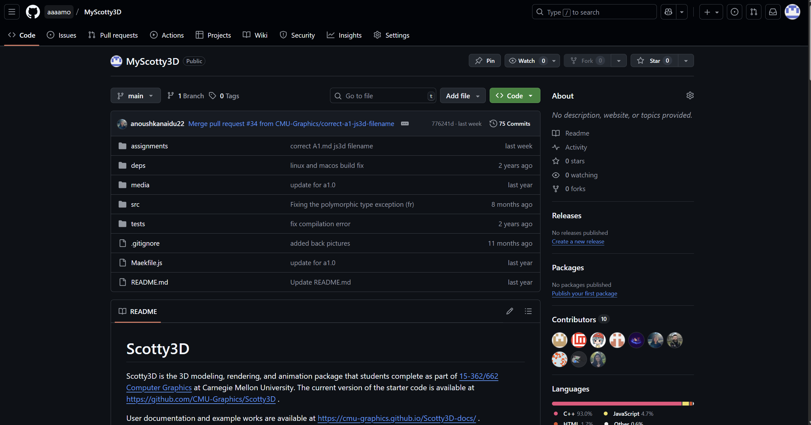
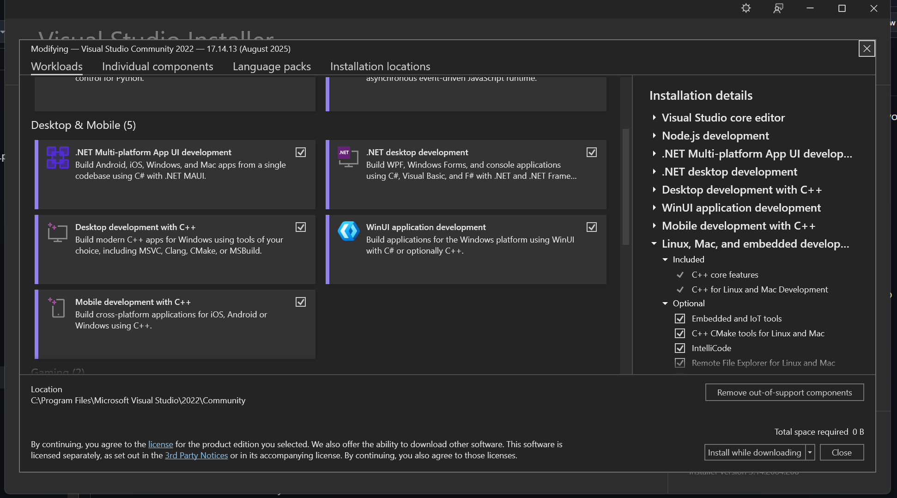
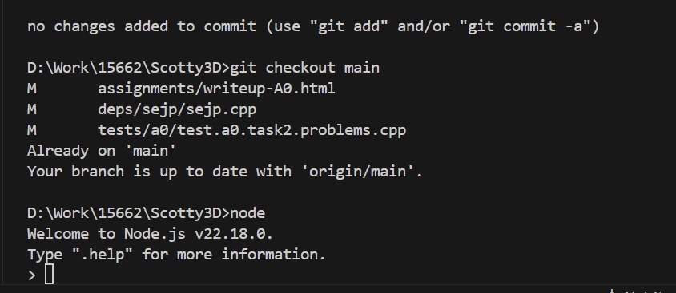
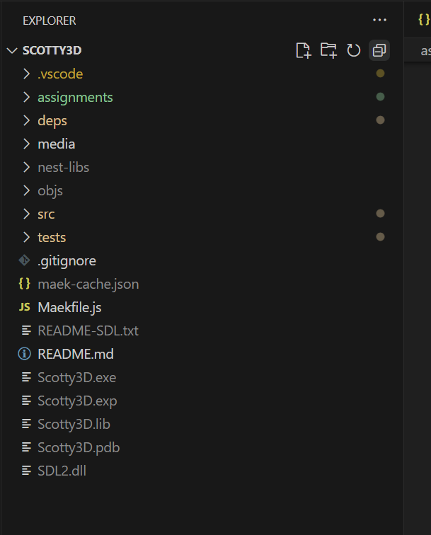
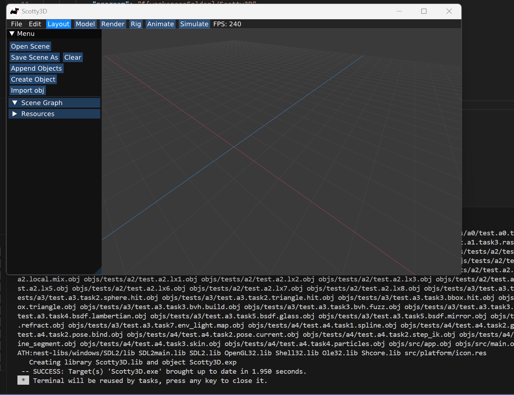
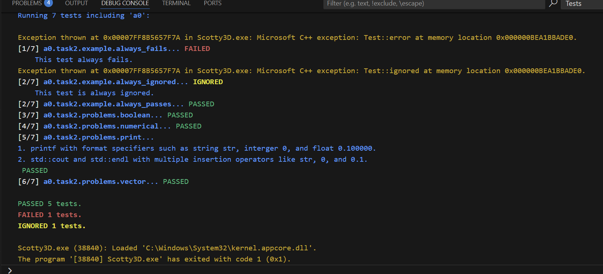

**Assignment 0 Report**
AndrewID: daehongk
(##) About this template
* You can view your writeup by opening it in a browser - right click this file and open with your browser of choice.
* Replace reference images with your own screenshots or renders when applicable.
* Include descriptions of any encountered problems and the time you spent on each task.
(##) A0T1
Step 1: Clone
No problems encountered; Took a few minutes

Step 2: General Setup
No problems encountered; Took maybe 20 to 30 minutes for installation
Visual Studio:

Node:
No problems encountered; nvm and node were already installed

Nest-libs:
No problems encountered; took a few minutes

Step 3: Build and Run
First, I built Scotty on wsl (ubuntu 24.04) - had to install a few g++ dependencies
Then I thought it would be better to build on windows instead, utilizing Visual Stuio
While building on windows I encountered some problem that students mentioned on piazza
1. can't find cl.exe
- I tried adding cl.exe to PATH since I prefer using bash over cmd but just had to default to using x64 Native Tools terminal in the end
2. problem building sejp.cpp regarding std::runtime_error
- followed the steps TA provided on piazza and it worked
It took maybe an hour to figure out what the problem is and address it.
GUI:

Tests:

(##) A0T2
Your completion of this task will be graded based on your `test.a0.task2.problems.cpp` file and your responses to the below questions.
For each of the problems you solved in task 2, characterise the bug in your own words and explain one other scenario that may cause this
type of bug.
Problem 1:
type should be std::string.
";" omitted.
std::cout typo.
should add "#include " for safety.
other scenarios: not closing parenthesis.
took a minute
Problem 2:
y / factor returns integer division.
changed factor to float to force float division.
other scenarios: 0.1 + 0.2 == 0.3
took a minute
Problem 3:
vector.end() points to the next position from the end.
*(one_to_ten.end() - 1) to get the last position.
other scenarios: calling some_vector.at(100) where it is out of bounds
took a minute
Problem 4:
(a == b) == c => (a == b && b == c)
other scenarios: a == b == c is same as (a == b) == c, and will create the same problem.
took a minute
(##) A0T3
You do not need any screenshots for this task. Your completion will be graded based on your `src` submission.
It took maybe half an hour to go through the stack and variables to find out that there's one more vertex than needed.
(##) Feedback
Use this section to provide feedback about the assignment.